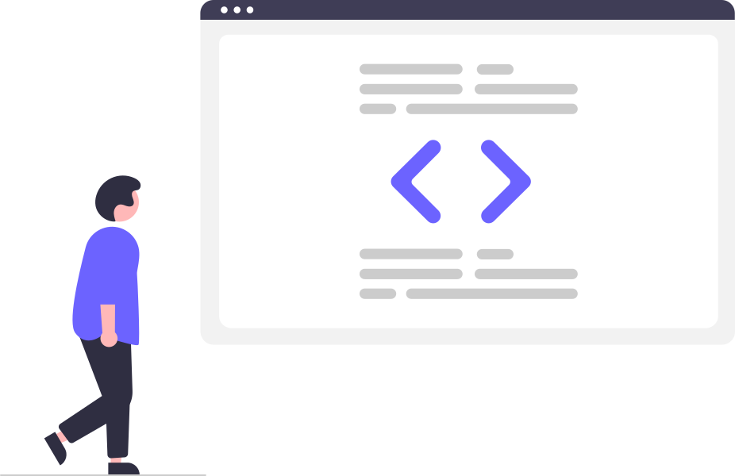

El camino hacia el desarrollo web
Soy un desarrollador web en formación, dando mis primeros pasos como programador junior. Aprendo constantemente y trabajo de manera proactiva en proyectos que me permiten crecer, mejorar mis habilidades técnicas y aportar valor real en el desarrollo web.
Ir al Login Demo